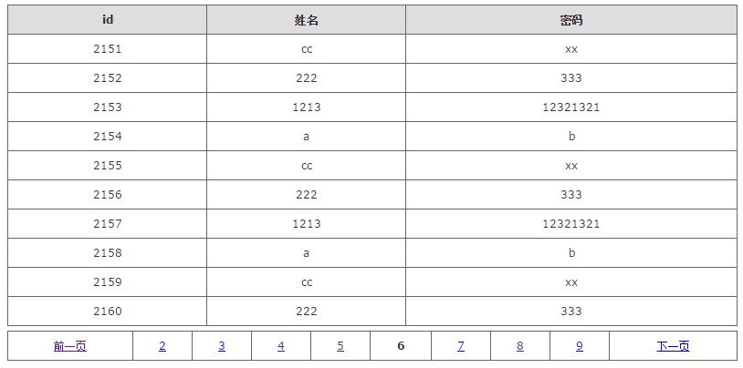

mgfinal
基于mgwork（servlet3.0多实例非单例）做mvc框架，
mybatis做orm框架，
mgioc做单例容器的mgfinal框架，
mgutil做日志及常用工具方法管理，
致力于打造实用的java后台底层。<br/>
适用于中小型应用，及研究框架底层学习爱好者。
mgfinal框架源码目录

相关包
(mgwork-ioc-2.0.jar mgwork-ioc框架集合（mvc + ioc） ----将源码移动到mgfinal中管理）
--fastjson.jar json解析包
--freemarker.jar 视图包，支持freemarker目前。
--jedis.jar 使用redis db0来做ioc容器。
mgutil-1.0.jar 通用工具类模块，包含扫描包，proputil,log4j日志器
--log4j.jar log4j日志
mybatis-xx.jar mybatis框架(orm)
--jsqlparser.jar
--pagehelper.jar mybatis分页插件
--mybatisext.jar mybatis的扩展工具，用来完成对象CRUD操作
常用数据源
--c3p0
--c3p0-0.9.5.1.jar c3p0数据源依赖包
--mchange-commons-java.jar
--druid
--druid-1.0.5.jar druid数据源依赖包
mybatis-redis.jar mybatis的二级查询缓存（可选）
--commons-pool2-.jar 依赖pool2jar
--jedis.jar java操作redis的客户端包
mgfinal-1.0版本
2016-5-13 1:25,生成mgfinal的1.0版本。
特性：
1.点对点servlet3.0高速mvc控制跳转。
2.基于redis为容器的@ToBean,@UseBean高速ioc依赖注入。
3.支持jsp,html,freemarker的java视图。（后续可以添加更多支持）
4.集成mybatis的动态sql,通用orm。
5.集成mybatis-ext的简易对象CURD。
6.集成mybatis-redis的mybatis二级查询缓存。
7.支持流行数据源druid,c3p0,及mybatis自带数据源。
关于作者
一个喜爱代码的狂热工作者，常用名梦网，梦来梦往，mg0324等。
QQ:1092017732
github:https://github.com/mg0324
gitoschina:https://git.oschina.net/mgang
如果觉得不错的话，别忘了给个star咯。thanks.
项目初探
2016-5-11 demo 图

2016-5-13 pagehelper demo图

更新日志
2016-5-3
1.继承mgwork-2.0 和 mybatis 3.* 到mgfinal框架中。
2.搭建mybatis底层，初步增加丰富的查询封装。
(selectOne)，(selectList)，(selectMap)，(selectListMap)，(selectForInt)，(selectForString)等
3.集成PageHelper来实现mybatis分页，新增分页案例及方法(selectPage).
2016-5-4
1.整合mgwork-ioc框架，测试通过。
2.添加2个方法executeUpdate和executeQuery 通用的crud方法。
3.正在想办法实现事务控制！
2016-5-10
1.完成事务控制，找到之前的原因（mysql的配置my.ini，未使用innodb的引擎，导致不支持事务。）找到原因后，事务支持成功。
//开启事务
this.demoDao.start();
//操作1
this.demoDao.ddlTx("com.mgfinal.vo.Demo.addDemo", p);
//操作2
this.demoDao.ddlTx("com.mgfinal.vo.Demo.addDemo", p);
//提交事务
this.demoDao.end();
2.start,end的事务，放到master主分支中。另外还有一个基于SqlHelper先获取sql,然后conn来commit,rollback的事务支持提交到了v0.1分支。
3.修改方法名称 executeUpdate -> ddl , executeQuery -> query , executeUpdateWithTx -> ddlTx，只要是简单明了。
4.添加数据源支持常用数据源支持driud,c3p0等。
c3p0:
①添加jar包支持c3p0-0.9.5.1.jar和mchange-commons-java-0.2.10.jar
②mybatis.xml配置文件中，配置数据源如下
<dataSource type="com.mgfinal.core.mybatis.ds.C3P0DataSourceFactory">
<property name="driverClass" value="${driver}" />
<property name="jdbcUrl" value="${url}" />
<property name="user" value="${username}" />
<property name="password" value="${password}" />
<property name="idleConnectionTestPeriod" value="60" />
<property name="maxPoolSize" value="20" />
<property name="maxIdleTime" value="600" />
<property name="preferredTestQuery" value="SELECT 1" />
</dataSource>
driud:
①添加jar包支持druid-1.0.5.jar
②mybatis.xml配置文件中，配置数据源如下
<!-- druid数据源 -->
<dataSource type="com.mgfinal.core.mybatis.ds.DruidDataSourceFactory">
<!-- 基本属性 url、user、password -->
<property name="driver" value="${driver}" />
<property name="url" value="${url}" />
<property name="username" value="${username}" />
<property name="password" value="${password}" />
<!-- 配置初始化大小、最小、最大 -->
<property name="initialSize" value="1" />
<property name="minIdle" value="1" />
<property name="maxActive" value="20" />
<!-- 配置获取连接等待超时的时间 -->
<property name="maxWait" value="60000" />
<!-- 配置间隔多久才进行一次检测，检测需要关闭的空闲连接，单位是毫秒 -->
<property name="timeBetweenEvictionRunsMillis" value="60000" />
<!-- 配置一个连接在池中最小生存的时间，单位是毫秒 -->
<property name="minEvictableIdleTimeMillis" value="300000" />
<property name="validationQuery" value="SELECT 'x'" />
<property name="testWhileIdle" value="true" />
<property name="testOnBorrow" value="false" />
<property name="testOnReturn" value="false" />
<!-- 打开PSCache，并且指定每个连接上PSCache的大小 -->
<property name="poolPreparedStatements" value="true" />
<property name="maxPoolPreparedStatementPerConnectionSize" value="20" />
</dataSource>
5.升级mgwork-ioc-1.2.jar，将日志常用操作丢给mgutil来管理。
2016-5-11
1.集成mybatisext来完成对象CRUD操作的通用方法实现，包括(save,delete,update,one,list,page,count等);
2016-5-13
1.集成mgwork-ioc-2.0.jar，使用redis来做ioc容器，默认使用的是redis的0数据库。
(请升级mgwork-ioc-2.0.jar，欢迎到http://git.oschina.net/mgang/mgwork下载)
注意点：1.redis存储对象，需要改对象实现Serializable序列化接口。
所以service抽象了一层BaseService,目前用做序列化实现。
dao的序列化交给了baseDaoImpl来实现。
vo,bean的部分，就需要自己手动加上了。
2.在mgwork.properties中加上配置ioc容器的redis服务。
#redis服务主机
mg.ioc.redis.host = localhost
#redis服务端口
mg.ioc.redis.port = 6379
2.使用mybatis-redis.jar工具包，来做mybatis查询缓存，提供查询响应效率。
注意点：1.加入mybatis-redis-1.0.0-beta2.jar包。
2.在要使用查询缓存的mapper中首行加上配置。
<!-- redis缓存 -->
<cache type="org.mybatis.caches.redis.RedisCache" />
3.可以开启mybatis中的自身缓存（一级），redis就算做2级缓存了。在mybatis.xml主配置文件中
加上settings节点如下：
<settings>
<!-- 这个配置使全局的映射器启用或禁用缓存 -->
<setting name="cacheEnabled" value="true" />
<!-- 对于未知的SQL查询，允许返回不同的结果集以达到通用的效果 -->
<setting name="multipleResultSetsEnabled" value="true" />
<!-- 配置默认的执行器。SIMPLE 执行器没有什么特别之处。REUSE 执行器重用预处理语句。BATCH 执行器重用语句和批量更新 -->
<setting name="defaultExecutorType" value="REUSE" />
<!-- 全局启用或禁用延迟加载。当禁用时，所有关联对象都会即时加载。 -->
<setting name="lazyLoadingEnabled" value="false" />
<setting name="aggressiveLazyLoading" value="true" />
<!-- <setting name="enhancementEnabled" value="true"/> -->
<!-- 设置超时时间，它决定驱动等待一个数据库响应的时间。 -->
<setting name="defaultStatementTimeout" value="25000" />
</settings>
3.加入mybatis-redis要的配置文件，配置查询缓存连接的redis服务，如下：
#使用redis的第2个数据库来做mybatis查询缓存
host=localhost
port=6379
connectionTimeout=5000
soTimeout=5000
password=
#选择数据库，0被mgwork-ioc占用
database=1
clientName=
4.使用redis图形客户端查看redis数据库中的key情况：

5.生成mgfinal-1.0版本，导出jar包为mgfinal-1.0.jar。
6.加入mgwork ioc等源码，让mgfinal管理，并调整目录。更改web.xml中mgfinal ioc监听启动配置。
<listener>
<listener-class>com.mgfinal.core.ioc.context.IocListener</listener-class>
</listener>
7.后续会编写使用手册，有需要，可以收藏，等待手册。